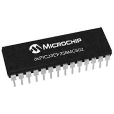
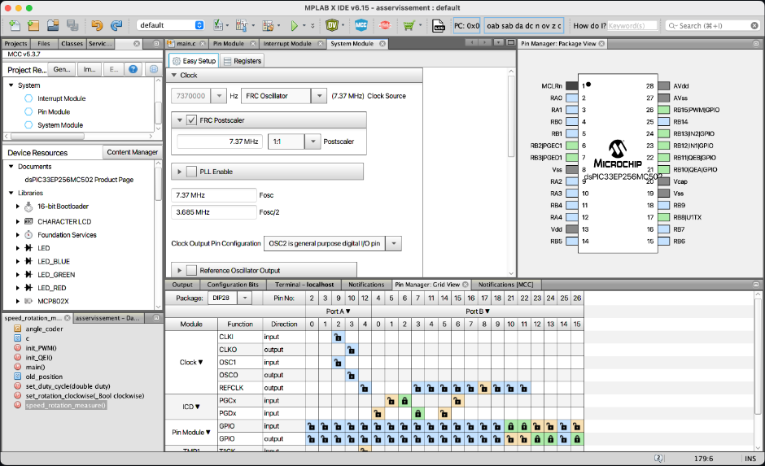
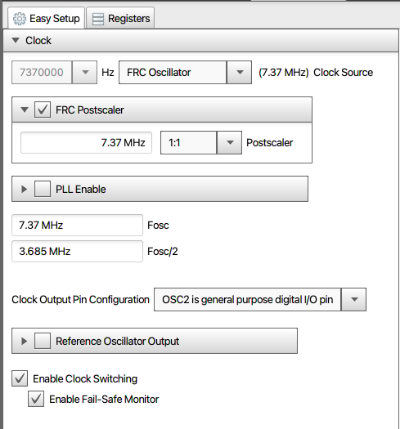
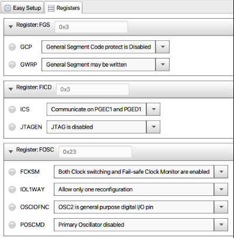
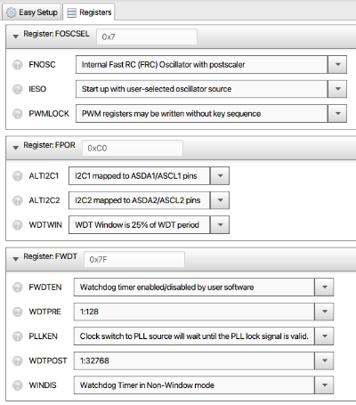
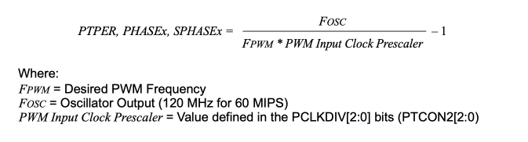
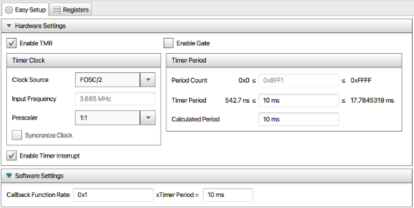

4.5.1. Introduction¶
Ici se trouve le code pour l’asservissement en vitesse des moteurs DC du robot. L’asservissement est géré par un dsPIC33EP256MC502 et est programmé via l’IDE MPLAB X.
{kind=link}
{kind=link}
L’objectif de l’asservissement est de s’assurer que la vitesse de rotation du moteur sera bien celle qui est attendu. Pour cela, la présence d’un encodeur est nécessaire afin d’avoir un retour quant à la vitesse de rotation du moteur puis adapter la consigne de tension pour atteindre la vitesse de rotation attendue. Le moteur sera contrôlé par un pont en H L298N.
L’asservissement est réalisé avec un moteur DC allant à 156 tours/min en sortie de réducteur et à 6450 tours/min avant réducteur. L’encodeur utilisé est un encodeur incrémental 12 points. Vous pouvez trouver à ce lien une explication du fonctionnement d’un encodeur. Il est à noter que notre encodeur ne possède pas de signal zéro (ou home).
4.5.2. Création du PID¶
L’objectif de cet asservissement est d’avoir un système stable avec un dépassement nul ou quasi-nul, aucun dépassement statique et un temps de réponse le plus faible possible mais inférieur à 200 ms.
Afin de répondre à ces exigences nous avons mis en place un PID (Proportional Integral Derivator) doté de 3 facteur kp, ki et kd. Leur impact sur l’asservissement est décrit ci-dessous pour plus d’information veuillez visiter ce second lien.
L'erreur statique, c'est l'erreur finale une fois que le système est stabilité. Cette erreur doit être nulle. Pour diminuer l'erreur statique, il faut augmenter Kp et Ki.
Le dépassement, c'est le rapport entre le premier pic et la consigne. Ce dépassement diminue si Kp ou Ki diminuent ou si Kd augmente.
Le temps de montée correspond au temps qu'il faut pour arriver ou dépasser à la consigne. Le temps de montée diminue si Kp ou Ki augmentent ou si Kd diminue.
Le temps de stabilisation, c'est le temps qu'il faut pour que le signal commette une erreur inférieure à 5% de la consigne. Ce temps de stabilisation diminue quand Kp et Ki augmentent.
Afin de pré-dimensionner ces valeurs nous avons simulé le système sur Scilab ce qui nous a donné kp=100, ki=2 et kd=2.
Afin de pouvoir faire cela nous avons dû identifier le comportment du moteur pour cela nous avons mis en entrée une tension de 12V et print la vitesse renvoyé par l’encodeur toutes les 20 ms. À partir de là, nous avons déterminé le gain K et le temps de réponse Tau du moteur. Nous avons supposé que le moteur se comportait comme un premier ordre car avec notre résolution de valeur la différence n’est pas détectable.
Ensuite nous avons appliqué ces variables au moteur et les avons ajustées à tatons afin d’obtenir le comportement souhaité ce qui nous a donné kp=10, ki=20 et kd=0.3. En conclusion, la simulation par Scilab n’est pas nécessaire si la stabilité du système lors des essais n’est pas obligatoire.
4.5.3. Programmation du PIC¶
Le PID pour l’asservissement du moteur a été réalisé théoriquement. Il faut désormais programmer le PIC.
Pour cela, nous allons utiliser l’IDE MPLAB X, qui est spécialement développé pour la programmation des PICs.
Nous allons voir comment ont été programmés les différents éléments afin d’asservir le moteur ainsi que de communiquer avec d’autres contrôleurs via bus CAN. Pour toute cette partie, il sera nécessaire de se référer à la documentation du PIC ainsi qu’aux documentations des différents modules.
Pour programmer le PIC, il faut aussi installer le compilateur. Pour un dsPIC33, il nous faut le compilateur 16 bits XC16.
4.5.3.1. Génération d’une PWM¶
Nous allons commencer par voir comment a été paramétrée la PWM sur le PIC.
La première étape est de démarrer MCC, qui est une interface graphique pour aider à la configuration des registres. Pour démarrer MCC, il suffit de cliquer sur Tools dans la barre des menus puis Embedded et enfin MPLAB Code Configurator. Lors du premier démarrage il vous sera demandé de choisir un type de contenu, choisissez MCC classic. Ensuite cliquez sur Finish. Le lancement de MCC prend ensuite un certain temps.
Finalement, vous devriez avoir une interface ressemblant à celle ci-dessous. Avec la zone centrale où l’on va réaliser le paramétrage, le panneau à droite où le PIC est représenté avec ses différents périphériques. En bas se trouve la zone que nous utiliserons pour sélectionner les différents pins et à gauche, nous avons un panneau nous permettant de sélectionner différents modules.
{kind=link}
Nous allons maintenant configurer le système pour notre utilisation. Pour cela, nous allons nous rendre dans le System Module puis configurer comme montré sur l’image ci-dessous. Nous choisissons l’oscillateur interne au PIC et mettons le postscaler à 1:1.
{kind=link}
Nous passons maintenant dans l’onglet Registers du System Module afin de procéder à un paramétrage plus fin pour permettre le fonctionnement de la PWM et du module QEI. Il faut régler les registres définis ci-dessous sous peine de non fonctionnement de la PWM.
 {kind=link}
{kind=link}
Il serait possible théoriquement possible d’utiliser le module PWM de MCC, mais je ne suis jamais parvenu à faire fonctionner la PWM depuis le module. Nous allons donc configurer la PWM manuellement.
Tout d’abord il faut définir le pin de PWM. En se référent à la doc, les pins RB10 à RB15 peuvent être utilisés pour générer une PWM. Nous allons utiliser le pin RB15. Il faut définir le pin en tant que sortie. Pour cela, se rendre dans le Pin Manager: Grid View en bas de l’écran. Dans la section Pin Module, sélectionner le pin 15 du port B en tant que sortie, la case doit devenir verte.
Dans la section Clock, il est possible de désactiver le pin CLKO car il ne va pas nous servir.
Les pins activés s’affichent aussi dans le Pin Manager: Package View à droite.
Cliquez sur le bouton Generate en haut à gauche pour générer le code comme configuré précédemment.
Un fichier main.c a été généré et nous allons le modifier pour faire fonctionner la PWM. Se référer à la documentation PWM pour plus de détails quant au paramétrage.
Nous allons créer une fonction init_PWM pour initialiser la PWM. Cette fonction sera à appeler dans le main et la PWM fonctionnera. Nous définissons une PWM à 2 kHz avec un rapport cyclique de 50 %.
/*
* Initialisation of the PWM
*/
void init_PWM()
{
/* Set PWM Period on Primary Time Base */
PTPER = 3684; // 500 us
/* Set Phase Shift */
PHASE1 = 0;
/* Set Duty Cycles */
MDC = 1842; // 50 %
/* Set Dead Time Values */
DTR1 = 0;
ALTDTR1 = 0;
/* Set PWM Mode to Push-Pull, swap for having a 'high' duty cycle
* and enable only pwm1 on pin RB15
*/
IOCON1 = 0x4C02;
/* Set PWM Mode to Independent */
PWMCON1 = 0x0100;
/* Configure Faults */
FCLCON1 = 0x0003;
/* 1:1 Prescaler */
PTCON2 = 0x0000;
// Enable only pwm on pin RB15
IOCON2 = 0;
IOCON3 = 0;
/* Enable PWM Module */
PTCON = 0x8000;
}
La valeur à mettre dans le registre PTPER pour choisir la période de la PWM se fait avec la formule suivante :
{kind=link}
Nous allons aussi définir une fonction set_duty_cycle pour modifier le rapport cyclique de la PWM.
/*
* Set the duty cycle of the PWM
* @param duty: wanted duty cycle of the pwm
* 0 <= duty <=1
*/
void set_duty_cycle(float duty)
{
// duty must be between 0 and 1
if(duty < 0) duty = 0.0;
else if(duty > 1) duty = 1.0;
// MDC = Duty cycle register
// PTPER = Period register
MDC = PTPER * duty;
}
Pour définir le sens de rotation du moteur, nous allons définir deux pins en tant que sortie dans le Pin Manager. Nous choisissons les pins RB12 et RB13. Dans le Pin Module, nous allons mettre l’un des deux pin en valeur haute au démarrage en cochant la case. Une fois le code généré, nous nous rendons dans le fichier main et créons une fonction pour définir le sens de rotation du moteur.
/*
* Set the rotating direction of the motor
* @param clockwise: set the rotating direction of the motor clockwise
* The rotating direction set here may not be really it depending how the motor is cabled
*/
void set_rotation_clockwise(bool clockwise)
{
// Set or reset RB12 and RB13
LATBbits.LATB12 = clockwise;
LATBbits.LATB13 = !clockwise;
}
4.5.3.2. Lecture de l’encodeur¶
La PWM est maintenant générée et nous pouvons donc contrôler le moteur à différentes vitesses. Nous allons voir comment lire la vitesse de rotation du moteur à partir de l’encodeur. Pour cela, un module QEI (Quadrature Encoder Interface) est disponible sur les dsPIC, mais ne peut pas être défini depuis MCC.
Nous commençons par définir, dans le Pin Manager, les pins QEA et QEB sur les pins RB10 et RB11 en tant qu’entrées. Ces pins ont été choisis car ils sont tolérant jusqu’à 5 V et notre encodeur renvoie une tension de 5 V. Une fois le code généré, nous nous rendons dans le fichier main et créons une fonction pour initialiser le module QEI.
/*
* Initilisation of the QEI
*/
void init_QEI(void)
{
RPINR14 = 0x2a2b; // Set QEI on RB10 and RB11 (pins 21 and 22)
// Set parameters
QEI1CONbits.CCM = 0; // Counter Control Mode Selection bits set as x4 mode
QEI1CONbits.INTDIV = 7; // Timer clock prescaler set as 1:128
QEI1CONbits.IMV = 0; // Index match value
QEI1IOCbits.FLTREN = 0; // Deactivate filter
QEI1CONbits.PIMOD = 0; // Position counter is unaffected by the Index input
QEI1IOCbits.SWPAB = 0; // Don't swap QEA and QEB
QEI1CONbits.QEIEN = 1; // Enable QEI module
}
Une fois la fonction exécutée, la lecture de la vitesse de rotation du moteur sera réalisée. La variable POS1CNTL sera incrémentée à chaque impulsion de l’encodeur. Le traitement sera vu dans la partie Utilisation des timers.
4.5.3.3. Utilisation des timers¶
Nous allons paramétrer un premier timer qui lèvera une interruption toutes les 12 ms afin de procéder à l’asservissement en fonction de la vitesse de rotation du moteur durant les 12 dernières millisecondes. Pour configurer le timer, nous allons utiliser MCC où depuis la fenêtre Device Resources, nous ajoutons le timer1. Le paramétrage est montré dans l’image suivante :
{kind=link}
Une fois le code générer, nous modifions le fichier main. Voici le code à ajouter :
#include "mcc_generated_files/tmr1.h"
// 12 = nb points coder ; 4 because the QEI mode is x4 ; angle in radians = 0.1309
#define ANGLE_CODER 360.0 / 12.0 / 4.0 * 3.1415926535897932384626433 / 180
#define TIME_INTERVAL 0.01 // s
// 0.01 == time between 2 calls of the timer interrupt
const float rotating_speed_coef = ANGLE_CODER / TIME_INTERVAL;
int old_position = 0; // Previous position of the encoder
// PID variables
const int kp = 10, ki = 20; const float kd = 0.3; // Coef PID
volatile int previous_error = 0.0, integral = 0.0;
volatile int rotating_speed_target = 0; // rad/s
/*
* Callback function called by the timer1 interrupts each 12 ms
* for calculating the rotating speed of the motor
*/
void speed_rotation_measure()
{
IFS0bits.T1IF = 0; // Clear timer 1 interrupt flag
int current_position = (int) POS1CNTL; // Get the pulse count
// Calculate the rotating speed in rad/s ;
// Around 700 rad/s at max speed
int rotating_speed = (current_position - old_position) * rotating_speed_coef;
old_position = current_position;
speed_count += rotating_speed;
speed_measure_count ++;
control_motor_speed(rotating_speed, TIME_INTERVAL); // Enslave
}
En définissant aussi les fonctions set_rotating_speed_target et control_motor_speed :
/*
* Enslave the motor to rotate at the speed defined by rotating_speed_target
* depending on the current speed
* @param speed: current rotating speed of the motor in rad/s
* @param time_interval: time between two controls
*/
void control_motor_speed(int speed, float time_interval)
{
// Calculate the error between the target speed and current speed
int error = rotating_speed_target - speed;
if(rotating_speed_target < 0) error = -error;
// Calculate the proportional term
int proportional = kp * error;
// Calculate the integral term
integral += ki * error * time_interval;
// Calculate the derivative term
float derivative = kd * (error - previous_error) / time_interval;
// Change the rotating speed
set_duty_cycle((float) (proportional + integral + derivative) / 670.0);
previous_error = error; // Update the error
}
/*
* Set the rotating speed target of the motor.
* @param target: wanted rotating speed of the motor,
* if <0, the motor rotate in the other direction
*/
void set_rotating_speed_target(int target)
{
rotating_speed_target = target;
// Set rotating direction
set_rotation_clockwise(target > 0);
// Reset
integral = 0;
previous_error = 0;
}
Il n’y a plus qu’à ajouter les lignes suivantes dans le main afin de lancer l’asservissement du moteur à la vitesse demandée :
TMR1_SetInterruptHandler(&speed_rotation_measure);
set_rotating_speed_target(600);
TMR1_Start();
En rentrant une valeur négative en paramètre de la fonction set_rotating_speed, le moteur sera asservi pour tourner dans l’autre sens.
4.5.3.4. Utilisation du bus I2C¶
Afin de communiquer avec la Raspberry Pi, nous utilisons le bus I2C en tant qu’esclave. Il est possible d’utiliser MCC pour la configuration, elle est assez facile (penser à cocher la case clock stretching). Cependant, nous allons refaire l’API de l’I2C pour qu’elle corresponde plus à l’utilisation. L’API est fortement inspirée de celle proposée par MCC mais avec des modifications directement dedans. Les pins pour l’I2C sont limités, nous allons utiliser le RB9 pour SDA et le RB8 pour SCL. Ces pins doivent être configurés en input.
Dans le fichier main.c, nous définissons 2 variables globales. La première qui contient l’adresse I2C que nous définissons pour le PIC (il faut 1 adresse différente par PIC sur le bus) et la deuxième contient un coefficient qui sera explicité un peu plus loin.
const uint8_t i2c_address = 0x53;
const uint8_t motor_speed_multiplier = 10;
Puis dans la fonction main, nous paramétrons l’I2C :
I2C1_Initialize(i2c_address, motor_speed_multiplier);
I2C1_ReadPointerSet(&speed_count, &speed_measure_count);
I2C1_set_receive_handler(&set_rotating_speed_target);
Avec le bus I2C, le PIC reçoit la vitesse de rotation du moteur voulue et envoie la vitesse de rotation réelle. Pour cela, nous communiquons les valeurs sur 1 octet, or la valeur de vitesse peut aller de -700 à 700 rad/s. Nous avons donc décidé que le premier bit correspond au bit de signe (1 = <0, 0 = >= 0) et les 7 bits suivants sont les bits pour la valeur en absolue mais divisée par un facteur pour être inférieur à 128. Ce facteur est définie en fonction de la résolution maximale que peuvent nous donner les encodeurs et qui reste inférieur à 128. Cette valeur est trouvée en divisant l’angle entre 2 pulse de l’encodeur (en rad) par le temps entre les appels de la fonction de mesure de vitesse.
4.5.3.5. Utilisation de la liaison série¶
La liaison série n’est pas utilisée dans le code final mais a servi pour le développement. Le paramétrage se fait via MCC en sélectionnant le périphérique UART, et les paramètres de base permette de communiquer. En cochant la bonne case, il est possible d’envoyer un message depuis le PIC en utilisant la fonction printf si la case a été cochée dans MCC. Pour la réception de message, on active les interruptions.
Pour la réception de données, l’interruption est levée pour chaque caractère reçu. Je n’ai pas réussi à faire correctement fonctionner la réception avec l’API proposée par MCC donc la fonction suivante qui doit être appelée à chaque fois qu’un caractère est reçu. On sauvegarde chaque caractère reçu jusqu’au caractère “n” ou que le message dépasse la capacité de la variable où on convertit la string reçue en nombre.
/*
* Callback function called when a serial message is received
*/
void serial_receive()
{
// Clear the error if there is one
if (U1STAbits.OERR)
{
U1STAbits.OERR = 0;
return;
}
char received_char = U1RXREG; // Read the received char
if (received_char == '\n' || char_count >= MESSAGE_LEN) // If it is the end of the message
{
int value = atoi(message); // Get the integer value
if(is_negative) value = -value; // Set the value negative if it necessary
set_rotating_speed_target(value);
// Clear the message to be ready for next message
for(int i = 0 ; i < MESSAGE_LEN ; i++)
message[i] = '$';
char_count = 0;
is_negative = false;
}
else if(received_char == '-') // If the value to be received is negative
is_negative = true;
else
{
message[char_count] = received_char; // Store the received character
char_count ++;
}
}
La liaison série est désactivée, mais le pin RB6 est prévu RX et le pin RB7 est prévu TX sur la carte moteur.
NOTE : La carte moteur a aussi été prévue pour pouvoir ajouter un quartz en horloge du PIC et d’utiliser le bus CAN avec CRX sur le pin RB9 et CTX sur le pin RB8.
{kind=link}